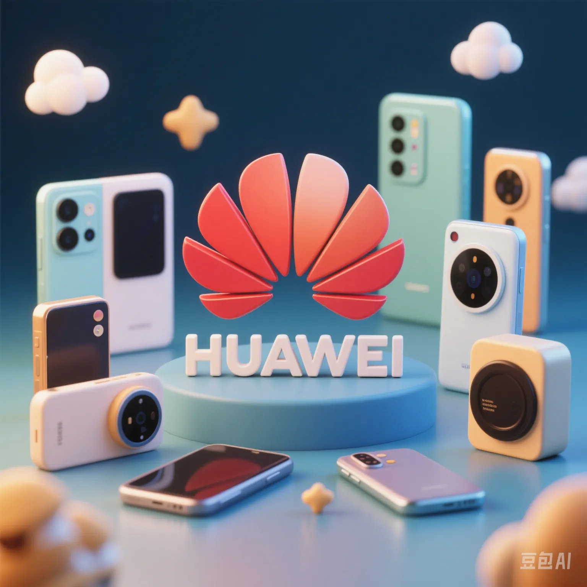

Huawei HarmonyOS Completely Bids Farewell to Android: Can China's Operating System Break Global Monopoly?
PeaceLove.Top Insights :2025-04-17
🚫 The 'De - Androidization' Is for Real!
In 2024, Huawei officially released HarmonyOS NEXT, which completely abandoned the AOSP Android codebase and is no longer compatible with any Android applications. This means that Huawei is no longer 'borrowing' the Android ecosystem but truly building its own operating system from scratch. It's a high - stakes bet on technological independence and a battle to break the global tech landscape. 💥
🇨🇳 China's 'Third - Pole' Operating System Is Taking Shape
Currently, the global mainstream mobile systems are almost monopolized by the duopoly of Apple iOS and Android, with a market share of over 99%. HarmonyOS is the only 'third system' with complete hardware - software integration capabilities and has been deployed on hundreds of millions of terminals.
The core advantages of HarmonyOS:
- 🔗 Distributed architecture: One - time development, cross - device compatibility across mobile phones, tablets, TVs, in - car systems, and wearables.
- 🔠System - level security: Minimized application permission scheduling and support from hardware encryption chips.
- 🧠Edge - cloud collaborative AI: AI models run locally, keeping privacy on the device.
📉 No Longer Compatible with Android: Risks and Opportunities Coexist
The biggest challenge of 'de - Androidization' is the ecosystem break - up. Countless apps familiar to users will not run, and developers must refactor code specifically for HarmonyOS. But this is also the necessary price for 'technological independence'. Huawei, together with many Chinese tech giants (such as Alipay, WeChat, Didi, and Douyin), is accelerating the development of native Harmony applications. âš™ï¸ğŸ“²
In October 2024, Huawei announced that the 'HarmonyOS Ecosystem Alliance' had over 4,000 members, with the goal of covering over 80% of commonly used apps by the Chinese public in 2025.
🌠The Collision between Technological Nationalism and Globalization
Huawei's move is not just a business choice but also symbolizes China's technology industry moving from a 'follower' to an 'independent innovator'. Against the backdrop of escalating Sino - US tech rivalry, it has extraordinary significance:
- ğŸ›°ï¸ Break free from the dual dependence on chips and operating systems.
- 🧩 Build a closed - loop local digital ecosystem.
- 💼 Promote the explosive growth of local software talents and startups.
However, from a global market perspective, if HarmonyOS fails to gain support from international developers and users, it may become 'isolated' overseas.
💡 The Next Step for HarmonyOS: Not Just a Mobile OS, but an 'Internet - of - Everything Operating System'
From the very beginning, Huawei did not position HarmonyOS as just a mobile operating system. Instead, it aims to be the underlying platform for the future Internet of Things, in - car systems, industry, healthcare, and smart homes. HarmonyOS's ambition far exceeds that of Android in its early days. It aims to be the next 'Windows of the intelligent era'. ğŸŒğŸš˜ğŸ¥ğŸ“º
🧠Conclusion: A High - Risk Breakout, and Possibly a New Era for Chinese Technology
'De - Androidization' is not just a product update but a testing ground for national digital sovereignty. If HarmonyOS can gain a foothold in the mobile market and successfully expand to the Internet of Things, industrial equipment, and in - car systems, China will truly have its own digital foundation. In the next few years, perhaps we will witness not just the 'Android vs iOS' battle, but a new global showdown between iOS and HarmonyOS. âš”ï¸ğŸ“±